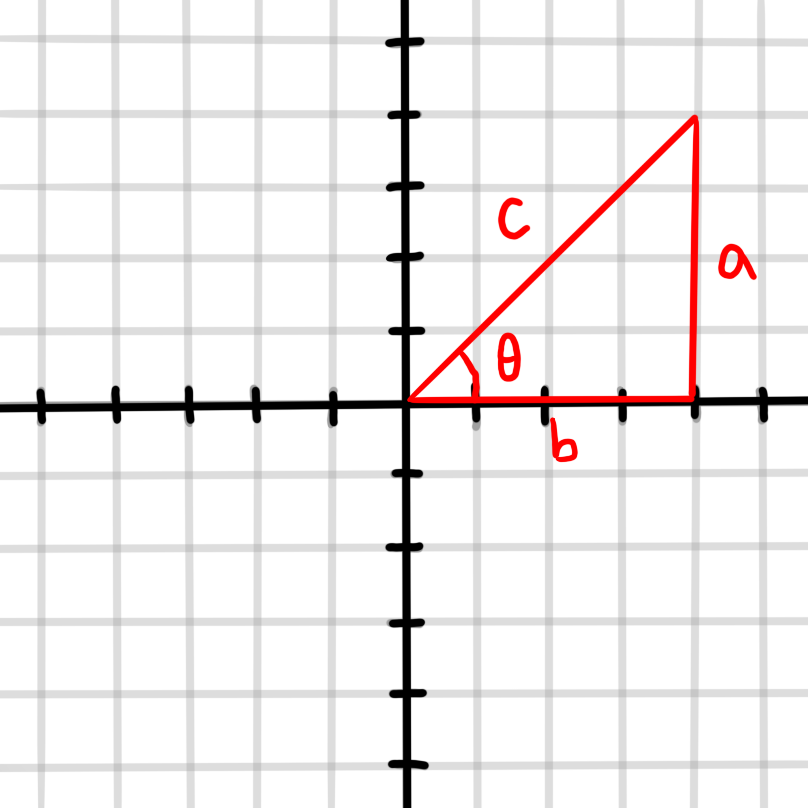
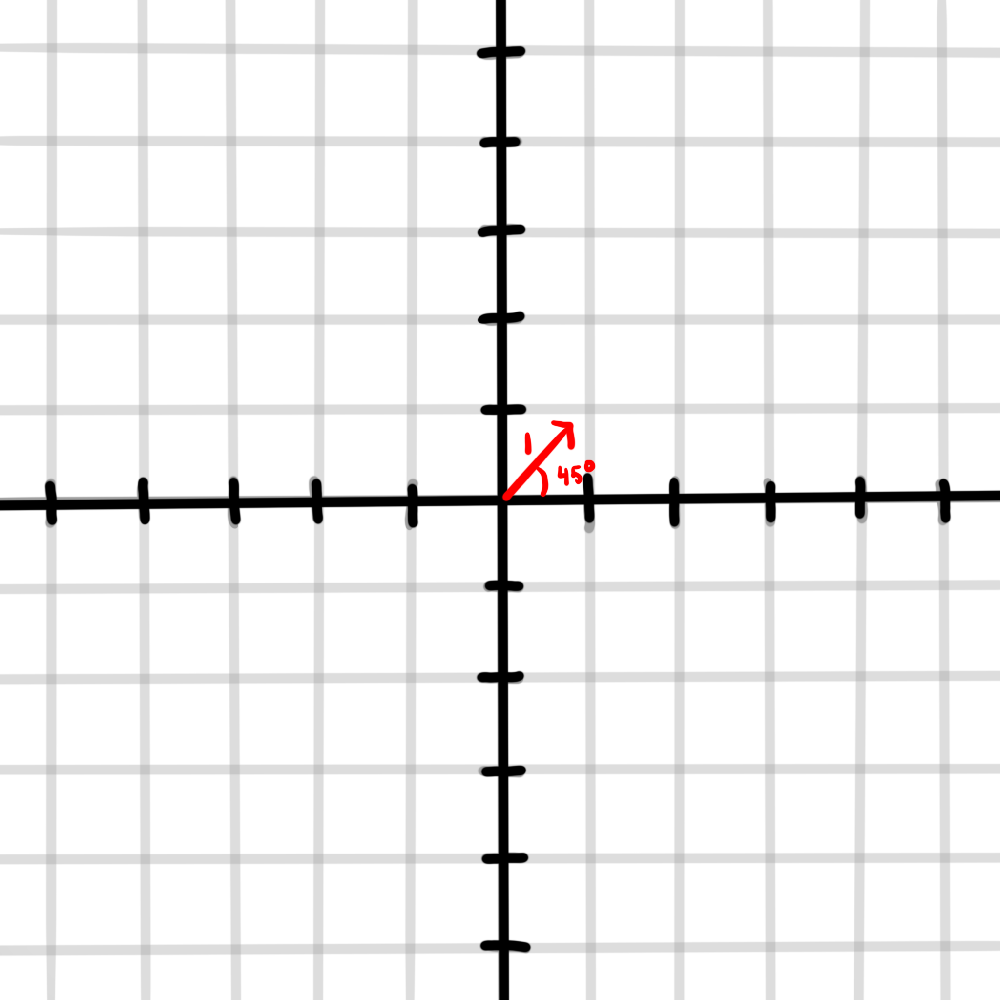
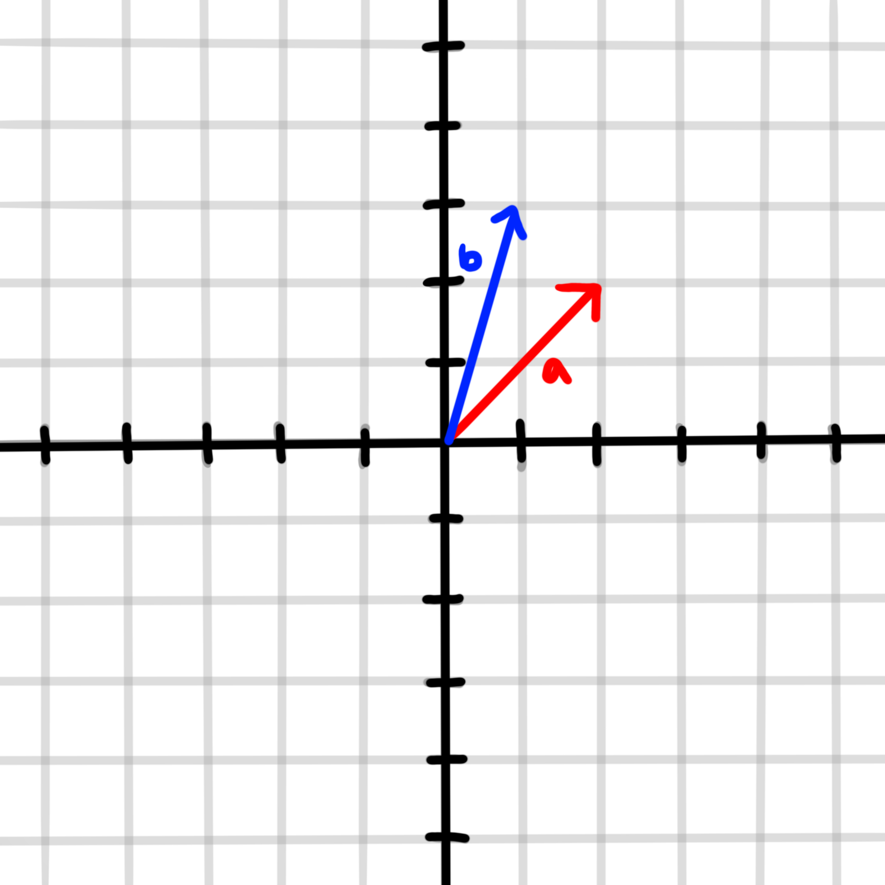
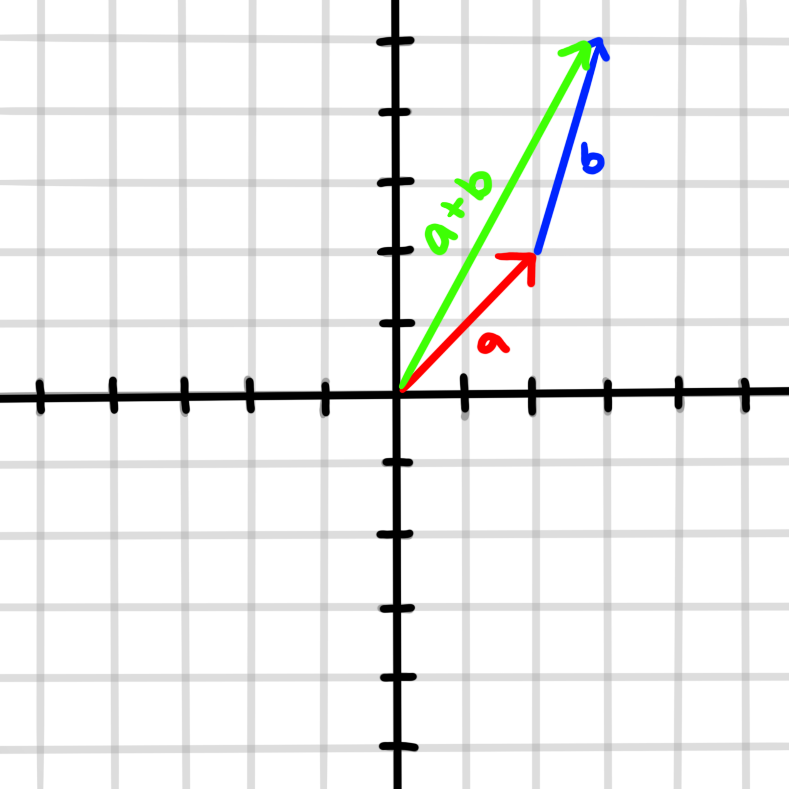
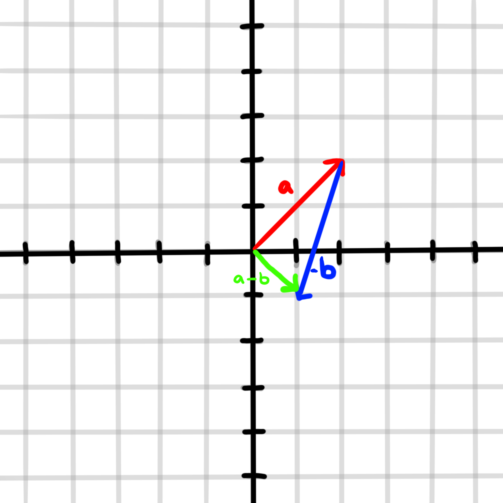
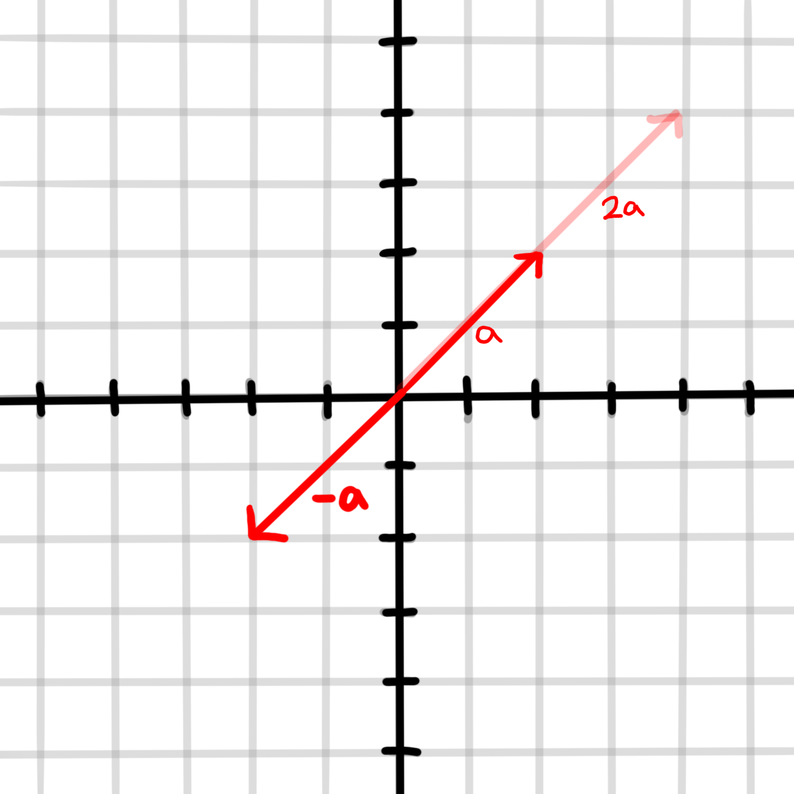

What is a vector?
A vector is a value (or magnitude) with a corresponding direction. This direction can by in terms of x and y, sometimes using theta,
for 2D vectors, or with 3D vectors can be in x,y, and z, using theta and phi as directional angles.
Vectors are shown graphically starting at a point in space, usually the origin, and have a head, which looks like an arrow, and a
tail, the other end of the vector.

Unit Vectors
What is a unit vector? What is it used for?
A unit vector is a vector with a magnitude (or size) equal to 1. These are extremely useful when needing to convert units.
For example, changing a position vector into a Force vector. Unit vectors are also helpful to find vectors in the same direction
using dot product, or simply mulitplying a unit vector by a scalar to give it a new magnitude.
How to find a unit vector
A unit vector can be found by dividing each component of a vector by the magnitude of the entire vector. To find the magnitude of a
vector, square each of the components, add them together, and take the square root. The magnitude of a vector is written
using vertical lines around a vector name: |v|
The magnitude of a vector will always be a scalar and have no direction corresponding to it.
The unit vector, on the other hand, is used for its direction, and not the magnitude.

Vector addition and subtraction
Vectors can be added using many different methods, but most commonly the head to tail method. This is done by putting
the tail of one vector to the head of the other and drawing a new vector from the tail of the first vector to the head
the second. It can also be done by adding together the alligned components and keeping it in vector form.



Scalar Multiplication
Scalar multiplication with vectors is simply multiplying each of the compnents by a scalar(or number) and keeping it in vector
form. This causes the vector to change length by a proportion of the scalar.
